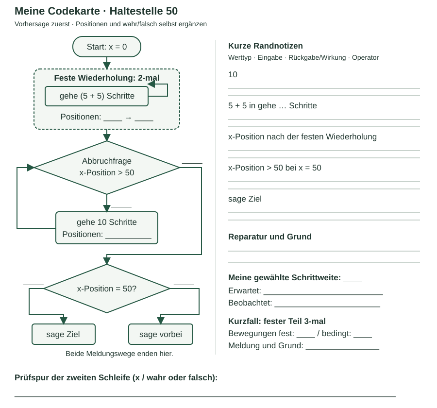

ALG-6 · Die Haltestelle ist verpasst!
60 Minuten · Rover-Werkstatt. Ein fremdes Programm fährt über die Haltestelle 50 hinaus. Finde die Ursache und zeige, dass deine Reparatur auch bei veränderten Werten funktioniert.
Startprojekt in Snap! öffnen ↗Startprojekt speichern (.xml)
Der Link lädt dein Startprojekt bereits. Halte deine Vorhersage fest, bevor du startest. Eigene Arbeit sicherst du über Datei speichern und prüfst sie mit Datei öffnen.
1 · Die Codekarte beginnen · 10 Minuten gemeinsam
Öffne das Startprojekt, starte noch nicht. Der Rover soll zunächst zweimal je 5 + 5 Schritte fahren, dann in Zehnerschritten bis an die Marke 50 oder darüber. Genau auf 50 soll „Ziel“ erscheinen, sonst „vorbei“.
Start x = 0; Richtung 90°
wiederhole 2-mal
gehe (5 + 5) Schritte
wiederhole bis x-Position > 50
gehe 10 Schritte
falls x-Position = 50
sage Ziel
sonst
sage vorbeiNutzt die Ablaufvorlage. Beginnt gemeinsam bei 0 und dem ersten festen Durchlauf. Auf einer Codekarte trägst du die Positionen und deine Notizen ein: als kleine Skizze der Vorlage oder direkt auf einem Ausdruck. Eine zusätzliche Laufspurtabelle brauchst du nicht.


2 · Untersuchen und reparieren · 35 Minuten
Vorhersage: Ergänze die Positionsfolge an beiden Schleifen bis zur Meldung. Beschrifte die Bedingungsausgänge mit wahr/falsch. Notiere auch die letzte Abbruchprüfung. Erkläre mit deiner Karte, was Anweisung, feste Wiederholung, bedingte Wiederholung und Verzweigung jeweils tun.
Randnotizen zur selben Karte: Ergänze knapp, was die folgenden Stellen erhalten bzw. liefern oder bewirken. Benenne Werttyp und vorhandenen Rechen-/Vergleichsoperator.
| Stelle | Deine kurze Notiz |
|---|---|
10 | … |
5 + 5 in gehe … Schritte | … |
x-Position nach der festen Wiederholung | … |
x-Position > 50 bei x = 50 | … |
sage Ziel | … |
Prüfen: Nutze Schrittmodus, Starten, dann Ein Schritt. Vergleiche mit deiner ersten Spur. Formuliere die Fehlerursache und ändere möglichst nur die Bedingung. Prüfe die Reparatur.
Deine Variante: Wähle für die bedingte Schleife Schrittweite 12 oder 15. Sage Endposition und Meldung vorher voraus, führe aus und ergänze beides auf der Karte. Was erklärt die Veränderung?
Richtwert: 10 Minuten Spur, 7 Randnotizen, 18 Erprobung/Reparatur/Variante. Wenn du festhängst, nutze einen passenden Hinweis.
3 · Gegencheck und Kurzfall · 15 Minuten
Lasse einen kritischen Schritt erklären und verbessere deine Karte oder Reparatur. Neuer Kurzfall: Setze die bedingte Schrittweite auf 10 zurück und ändere die feste Wiederholung auf 3. Sage die Zahl der Bewegungen beider Schleifen und die Meldung voraus, prüfe und begründe.
Behalte: deine Codekarte mit erster Spur, Randnotizen, Reparaturgrund und Varianten. Sichere die reparierte Fassung mit 2 Wiederholungen und Schrittweite 10 über Datei speichern als ALG-6_Kennung.xml. Prüfe sie über Datei öffnen.
Ein Hinweis zur Spur und zur Grenze
Prüfe die Abbruchbedingung vor jeder weiteren Bewegung. Was liefert 50 > 50? Passt das zu „erreicht oder überschritten“? Falls du einen Reparaturhinweis brauchst: „nicht mehr kleiner als 50“ lässt sich mit nicht und < ausdrücken. Erprobe den neuen Kurzfall danach selbst.